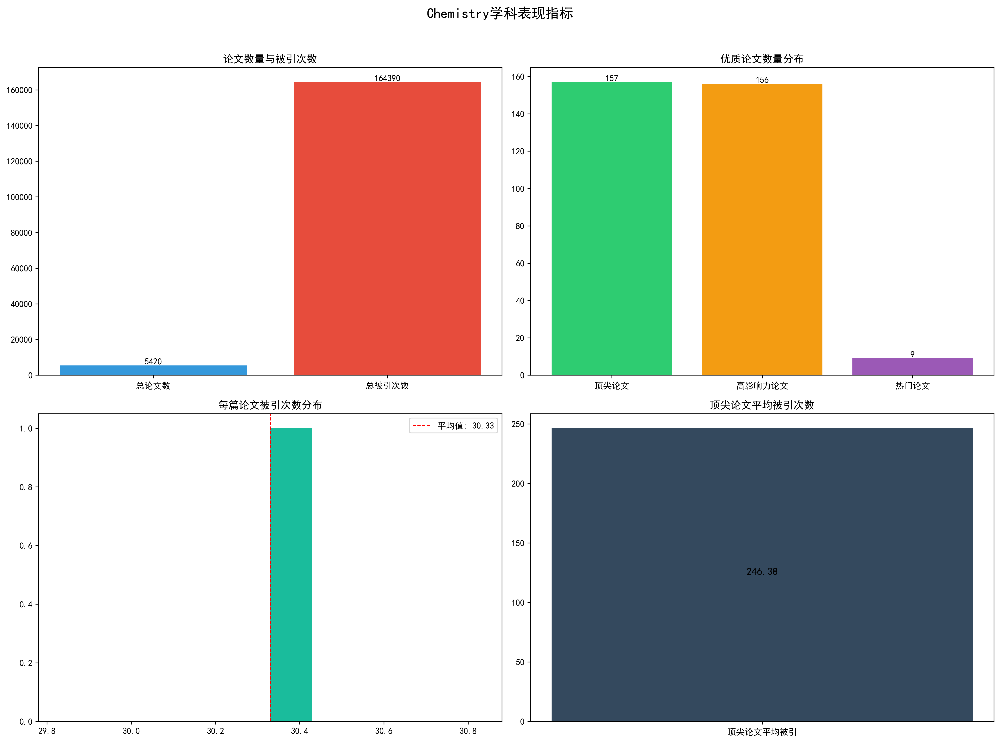
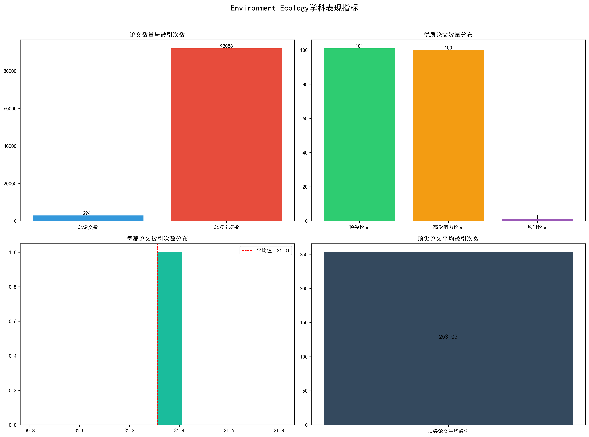
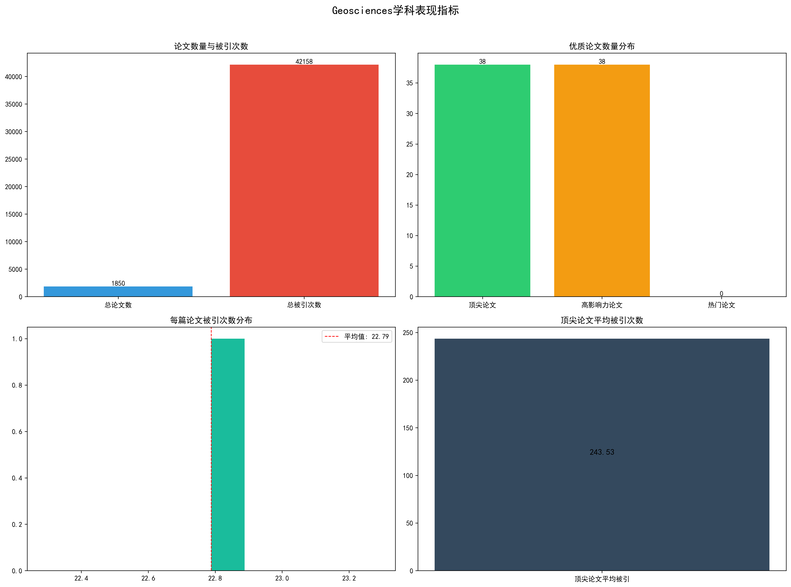
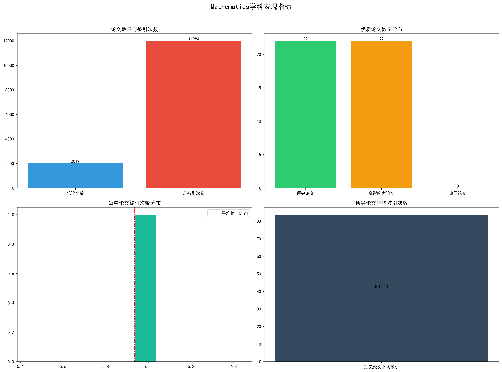
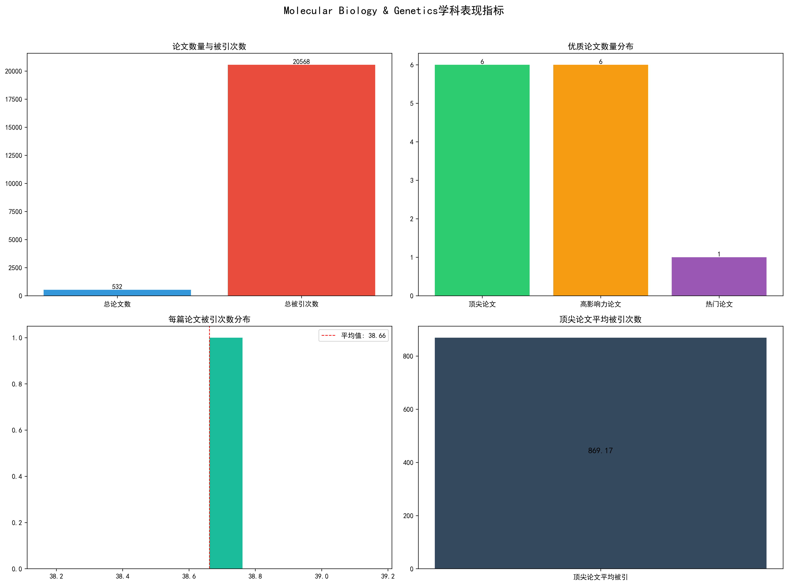
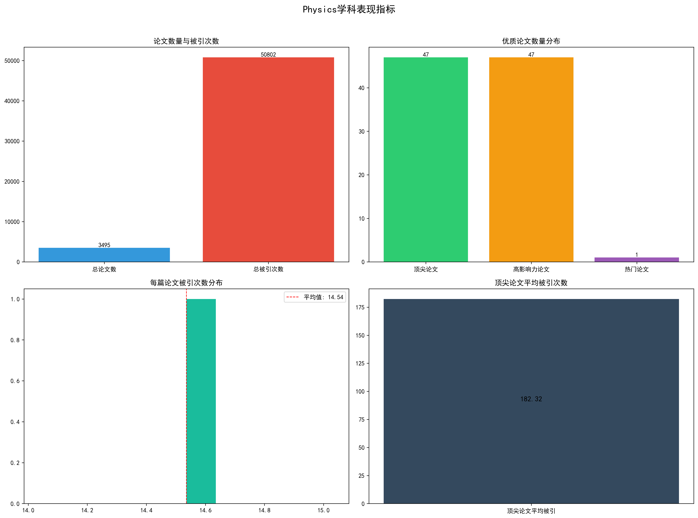
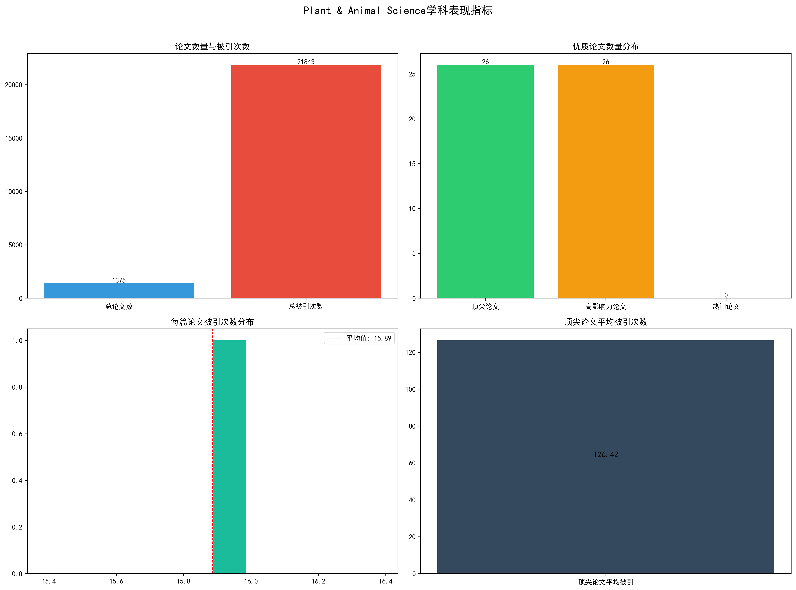
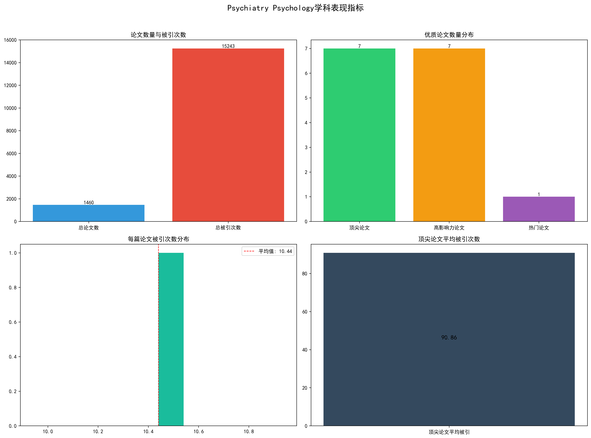
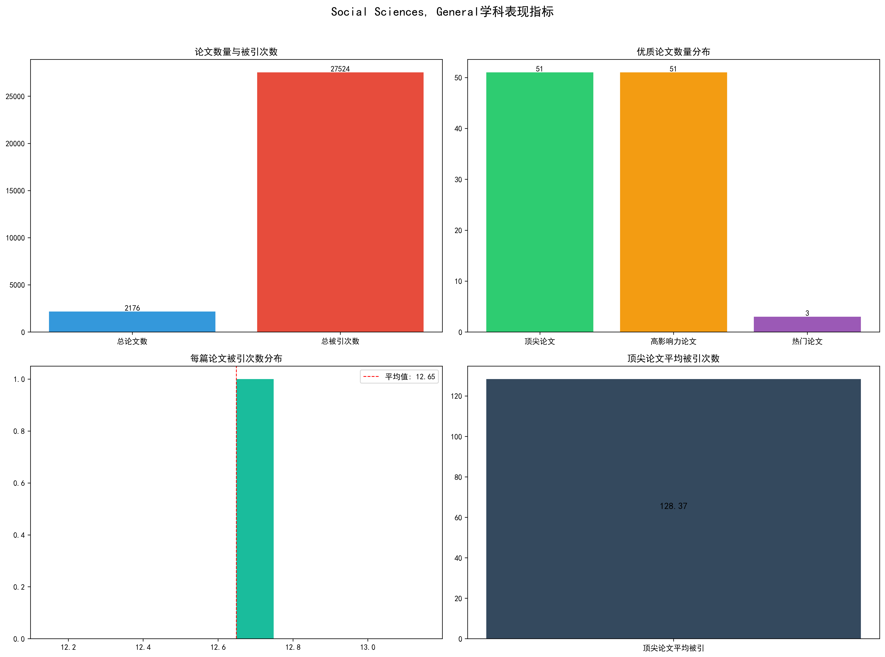

报告生成时间: 2025年10月11日 14:24:50
本报告分析了华东师范大学在Agricultural Sciences, Biology & Biochemistry, Chemistry, Clinical Medicine, Computer Science, Engineering, Environment Ecology, Geosciences, Materials Science, Mathematics, Molecular Biology & Genetics, Neuroscience & Behavior, Pharmacology & Toxicology, Physics, Plant & Animal Science, Psychiatry Psychology, Social Sciences, General等学科的表现， 主要从论文数量、被引次数、顶尖论文数量等指标进行分析。
346
6,513
4
18.82
897
20,837
18
23.23
5,420
164,390
157
30.33

940
16,875
12
17.95
1,803
22,336
25
12.39
2,567
55,450
86
21.60
2,941
92,088
101
31.31

1,850
42,158
38
22.79

2,720
93,969
57
34.55
2,019
11,984
22
5.94

532
20,568
6
38.66

771
14,295
7
18.54
289
5,693
5
19.70
3,495
50,802
47
14.54

1,375
21,843
26
15.89

1,460
15,243
7
10.44

2,176
27,524
51
12.65

华东师范大学在多个学科领域展现了一定的研究实力。从数据来看， 学校在顶尖论文数量和总被引次数方面有不错表现，显示出其研究成果的影响力。 不同学科发展较为均衡，各有优势领域。